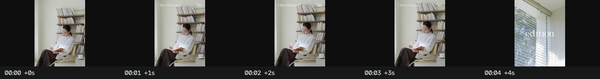
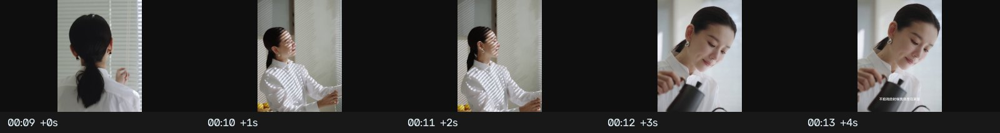
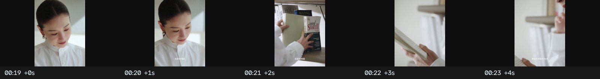
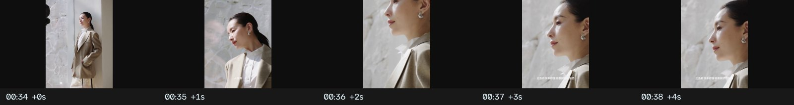
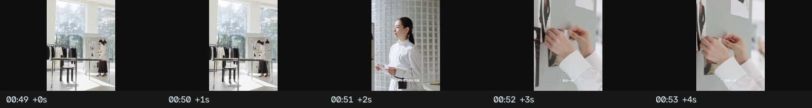
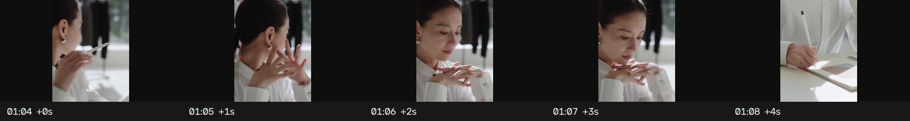
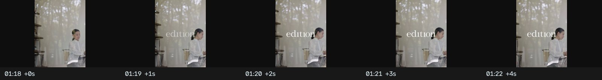
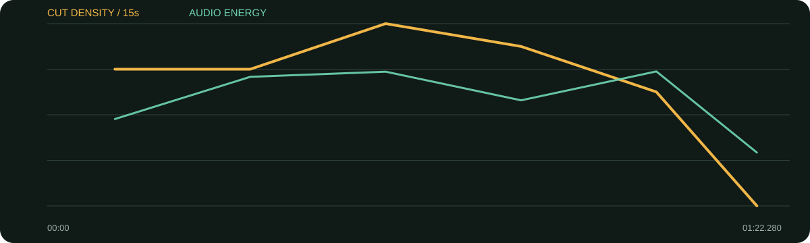

景别 / 机位系统
- 宽景交代空间，中景记录行动，微距/特写捕捉手与材质
- 动作在不同景别间连续，硬切也显顺滑
- 窗格、书架、桌面、玻璃构成重复视觉母题
- 高调白灰色系统统一多个生活场景
它几乎不是传统采访，而是82秒动作诗：窗边、烹饪、手、阅读、穿衣、行走、书写和玻璃反光围绕“喜欢生活”反复变奏，人物原声充当旁白。
口径说明：候选镜头由场景检测生成，闪光、人物快速动作、数字推拉和图形变化都可能误触发；逐秒重点由真实原片、字幕语义和全片总览人工选择。字幕来自本地中文语音识别，人名、品牌名与行业词可能有误，不把自动转写当逐字稿。
每张总览按时间顺序覆盖全片。它用于检查章节、B-roll密度和景别回环；详细切点以候选镜头表与下面的逐秒重点为准。
| 时间 | 章节 | 内容推进 | 剪辑任务 |
|---|---|---|---|
| 00:00–00:19 | 窗边与生活入口 | 从人物状态和空间开始，“喜欢生活”成为母题。 | 宽景—侧影—手部逐步靠近。 |
| 00:19–00:42 | 烹饪与细微之物 | 幸福来自生活里有意思的小事。 | 食物/手/桌面用动作连续串联。 |
| 00:42–01:02 | 年龄、豁达与自我整理 | 穿衣、行走、阅读/书写对应认知积累。 | 节奏保持轻快但不跳脱。 |
| 01:02–01:18 | 主动权与全力以赴 | 能掌握的事情要重视。 | 玻璃、桌面、手部和人物完成收束。 |
| 01:18–01:22 | 栏目片尾 | her edition标识。 | 快速减速并结束。 |
整片几乎全是B-roll，但每组动作都围绕生活热情、年龄积累、主动权和全力以赴，形成主题而不是素材合集。
综合音轨能量偏低，旁白段与动作空镜连续；未分离音乐，不能确认配乐具体起伏，但可按报告节奏图观察总体声能。
每张长图从左到右为真实的连续秒点。重点不是记住截图，而是看清一组画面怎样“进入—完成任务—退出”。

画面事实环境先于信息，观众先感受生活气质。
怎么复现用一个有纵深的窗边宽景建立视觉世界。

画面事实从人物缩到触感，建立“生活里的小事”。
怎么复现每个动作至少拍全景、中景、特写三条。

画面事实不同角度都围绕同一动作，硬切自然。
怎么复现按动作起点—进行—结果剪，不依赖插件。

画面事实静态空间中靠人物走动制造运动。
怎么复现让人物穿过前景或光影，不一定移动相机。

画面事实职业与生活由重复手部动作连接。
怎么复现找动作形状相似的镜头做匹配切。

画面事实“主动权”配可控制的手上动作。
怎么复现抽象词旁边放人物真实能做的动作。

画面事实动作停止后落栏目名。
怎么复现片尾前让画面和声音同时减速。

| 观察项 | 15秒窗口 |
|---|---|
| 视觉最密 | 00:30–00:45（32.0 候选切镜/分）；00:45–01:00（28.0 候选切镜/分）；00:00–00:15（24.0 候选切镜/分） |
| 视觉最缓 | 01:15–01:22（0.0 候选切镜/分）；01:00–01:15（20.0 候选切镜/分）；00:00–00:15（24.0 候选切镜/分） |
| 综合音轨最强 | 01:00–01:15（-21.8 dBFS）；00:30–00:45（-21.9 dBFS）；00:15–00:30（-23.1 dBFS） |
“视觉最密/最缓”基于自动候选切镜；“综合音轨最强”包含人声、环境声、音乐和音效，不能单独当作配乐音量。平均综合音轨为 -27.31 dBFS，最高15秒窗口 -21.80 dBFS，最低15秒窗口 -41.83 dBFS。
| # | 入点 | 出点 | 时长 | 代表帧秒点 | 证据 |
|---|---|---|---|---|---|
| 1 | 00:00.000 | 00:03.800 | 3.80s | 0.750000s | 自动候选 |
| 2 | 00:03.800 | 00:06.160 | 2.36s | 4.550000s | 自动候选 |
| 3 | 00:06.160 | 00:09.760 | 3.60s | 6.910000s | 自动候选 |
| 4 | 00:09.760 | 00:11.400 | 1.64s | 10.498000s | 自动候选 |
| 5 | 00:11.400 | 00:13.160 | 1.76s | 12.150000s | 自动候选 |
| 6 | 00:13.160 | 00:14.880 | 1.72s | 13.910000s | 自动候选 |
| 7 | 00:14.880 | 00:16.000 | 1.12s | 15.384000s | 自动候选 |
| 8 | 00:16.000 | 00:17.720 | 1.72s | 16.750000s | 自动候选 |
| 9 | 00:17.720 | 00:18.720 | 1.00s | 18.170000s | 自动候选 |
| 10 | 00:18.720 | 00:20.560 | 1.84s | 19.470000s | 自动候选 |
| 11 | 00:20.560 | 00:21.960 | 1.40s | 21.190000s | 自动候选 |
| 12 | 00:21.960 | 00:24.960 | 3.00s | 22.710000s | 自动候选 |
| 13 | 00:24.960 | 00:27.200 | 2.24s | 25.710000s | 自动候选 |
| 14 | 00:27.200 | 00:30.880 | 3.68s | 27.950000s | 自动候选 |
| 15 | 00:30.880 | 00:32.400 | 1.52s | 31.564000s | 自动候选 |
| 16 | 00:32.400 | 00:33.360 | 0.96s | 32.832000s | 自动候选 |
| 17 | 00:33.360 | 00:33.520 | 0.16s | 33.432000s | 自动候选 |
| 18 | 00:33.520 | 00:35.400 | 1.88s | 34.270000s | 自动候选 |
| 19 | 00:35.400 | 00:38.280 | 2.88s | 36.150000s | 自动候选 |
| 20 | 00:38.280 | 00:39.400 | 1.12s | 38.784000s | 自动候选 |
| 21 | 00:39.400 | 00:41.640 | 2.24s | 40.150000s | 自动候选 |
| 22 | 00:41.640 | 00:43.560 | 1.92s | 42.390000s | 自动候选 |
| 23 | 00:43.560 | 00:46.840 | 3.28s | 44.310000s | 自动候选 |
| 24 | 00:46.840 | 00:48.520 | 1.68s | 47.590000s | 自动候选 |
| 25 | 00:48.520 | 00:50.200 | 1.68s | 49.270000s | 自动候选 |
| 26 | 00:50.200 | 00:51.960 | 1.76s | 50.950000s | 自动候选 |
| 27 | 00:51.960 | 00:53.120 | 1.16s | 52.482000s | 自动候选 |
| 28 | 00:53.120 | 00:54.640 | 1.52s | 53.804000s | 自动候选 |
| 29 | 00:54.640 | 00:56.280 | 1.64s | 55.378000s | 自动候选 |
| 30 | 00:56.280 | 00:58.560 | 2.28s | 57.030000s | 自动候选 |
| 31 | 00:58.560 | 01:00.160 | 1.60s | 59.280000s | 自动候选 |
| 32 | 01:00.160 | 01:03.200 | 3.04s | 60.910000s | 自动候选 |
| 33 | 01:03.200 | 01:07.120 | 3.92s | 63.950000s | 自动候选 |
| 34 | 01:07.120 | 01:09.040 | 1.92s | 67.870000s | 自动候选 |
| 35 | 01:09.040 | 01:12.240 | 3.20s | 69.790000s | 自动候选 |
| 36 | 01:12.240 | 01:14.960 | 2.72s | 72.990000s | 自动候选 |
| 37 | 01:14.960 | 01:17.800 | 2.84s | 75.710000s | 自动候选 |
| 38 | 01:17.800 | 01:22.280 | 4.48s | 78.550000s | 自动候选 |